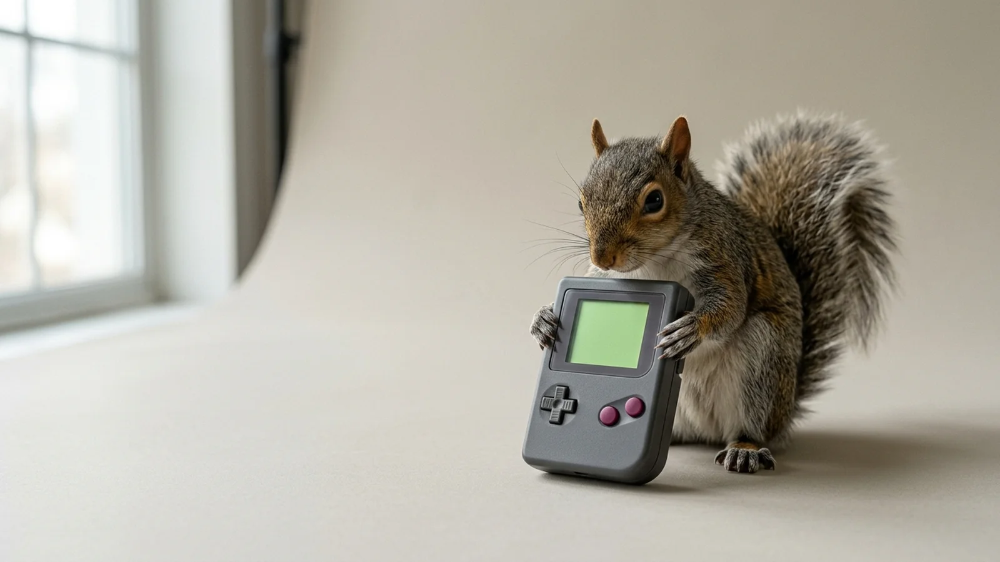
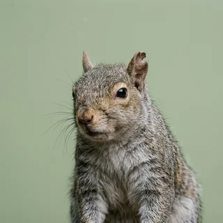

Scurry Lite
14 acorns
For the casual cacher.
- 1 cartridge, rated for 2 cm burial
- Mono speaker tuned to the alarm chirp
- Warranty void if eaten
Model SQ-01, autumn release
Scurry is a handheld console built around the 11-minute attention span of the eastern grey squirrel. Every cartridge is shaped to be cached in topsoil, and 74% are never found again, which our board has approved as a reforestation program.

powerPage 4 of the manual, reproduced here because the printed copy is usually buried with the box.
Progress is stored on the cartridge. The cartridge is stored about 4 cm underground, somewhere. Your squirrel resumes exactly where it left off, conditional on locating the save.
Squirrels do not cooperate, and our netcode respects that. When two Scurry units come within 3 metres, both players enter a chase with no win condition that ends at the nearest trunk.
The D-pad is rotated 90 degrees because nothing important in a squirrel's life happens horizontally. Up is up the tree. Down is down the tree, head first, at a speed our legal team has asked us to stop filming.
Collected through our warranty card program, which had a 3% return rate because the cards were also buried.
"I own 340 games and can access two of them. That is the best ratio I have had in years."
"Chase mode has no win condition. Neither does my day. Scurry gets that."

Tobias Greyflank"My cartridge sprouted. Support told me that counts as a sequel."
All prices in acorns. We accept walnuts at a fixed rate our finance team describes as aggressive.
14 acorns
For the casual cacher.
60 acorns or 1 walnut
Our most buried model.
Everything you buried in September
Billed when the ground freezes.
Winter Edition invoices are collected by a field agent who digs where you dug. If the agent finds less than you owe, the balance rolls into spring. If the agent finds more, it is not mentioned again.
10 cartridges. 3 accounted for.
Browse the library, pick a dig site, try your luck.